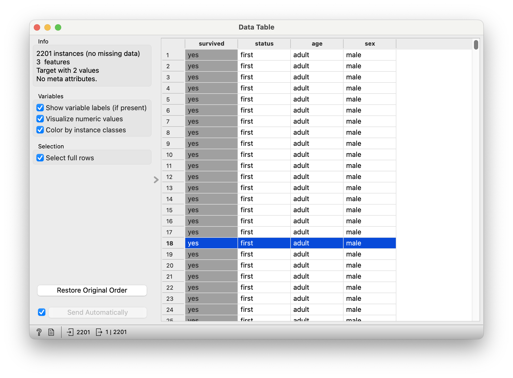
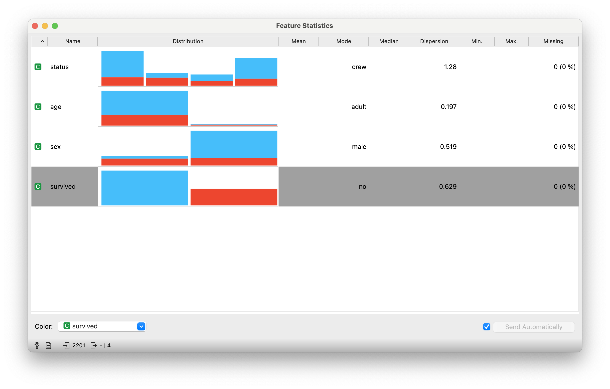
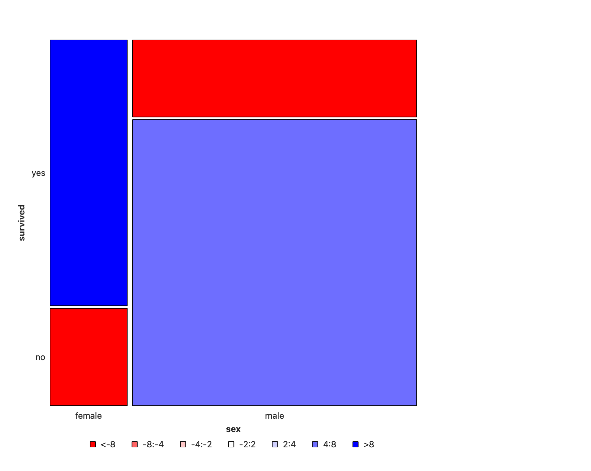
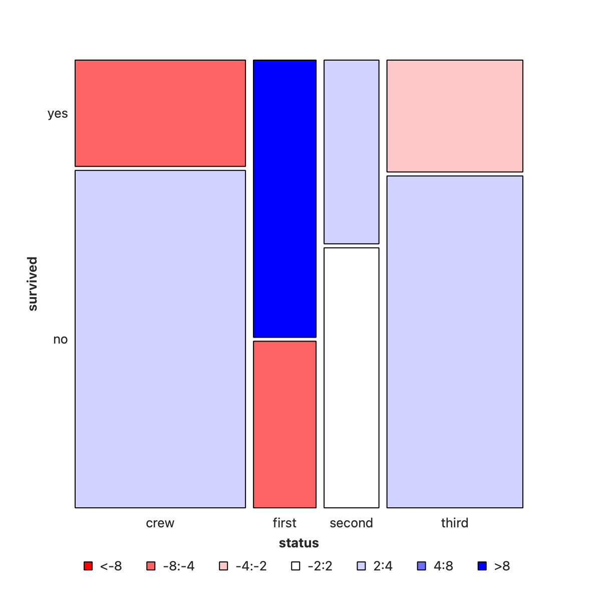
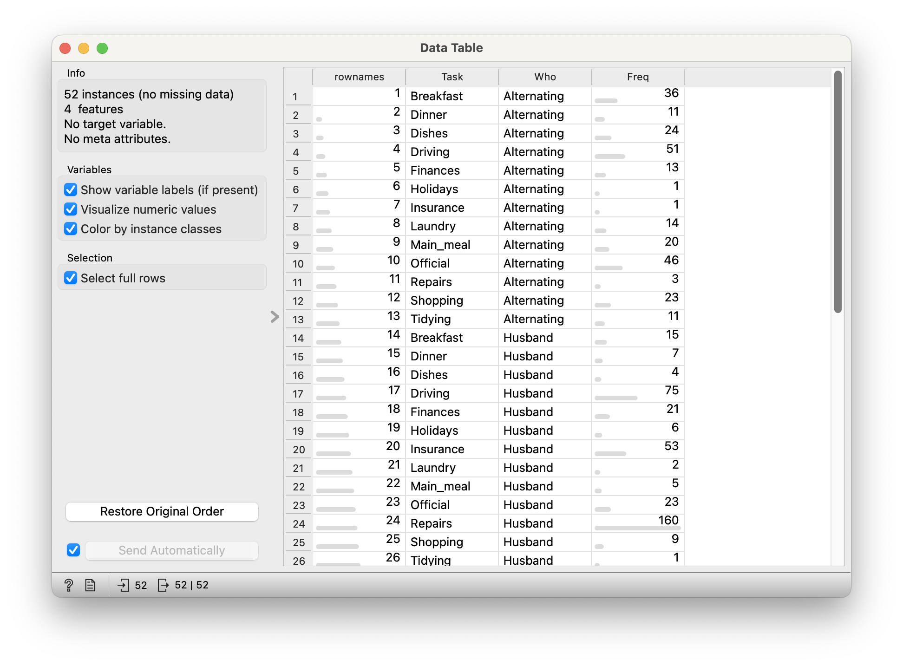
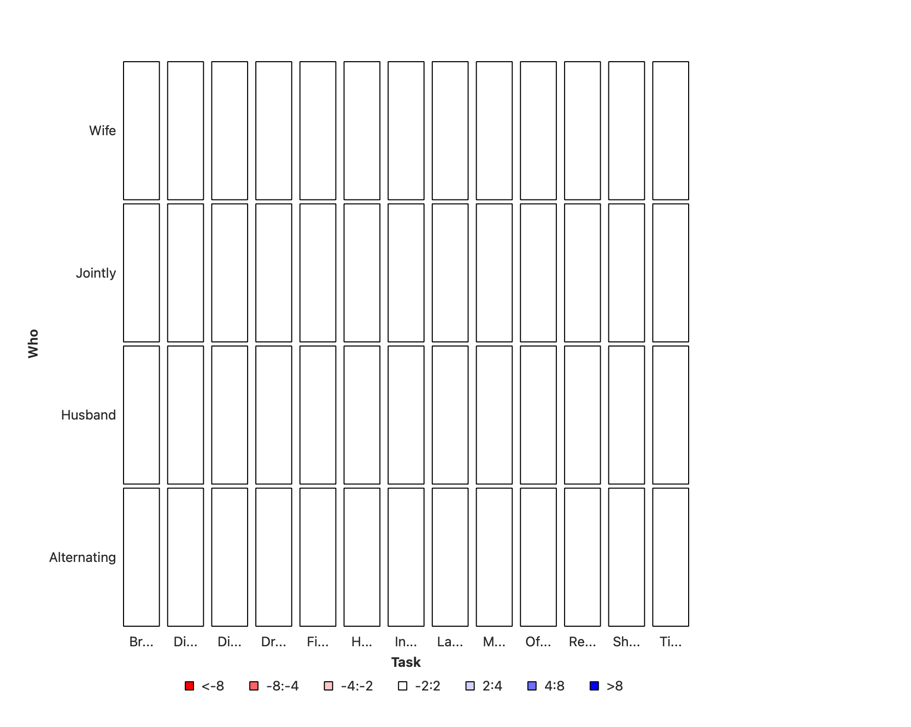
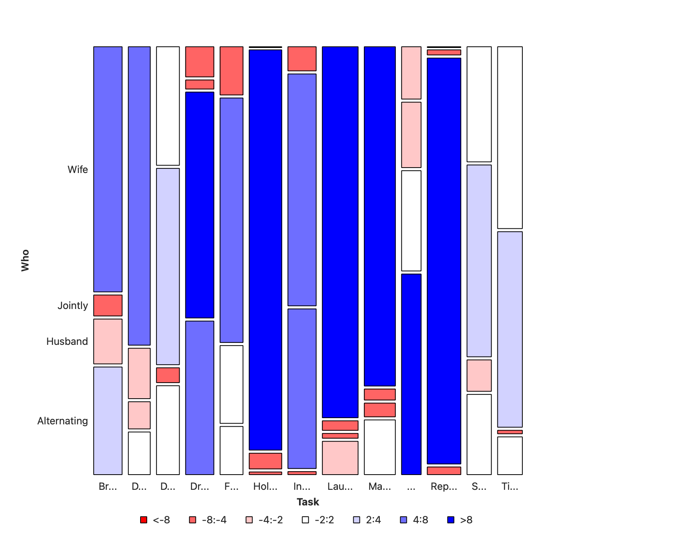

| No | Pronoun | Answer | Variable/Scale | Example | What Operations? |
|---|---|---|---|---|---|
| 3 | How, What Kind, What Sort | A Manner / Method, Type or Attribute from a list, with list items in some " order" ( e.g. good, better, improved, best..) | Qualitative/Ordinal | Socioeconomic status (Low income, Middle income, High income),Education level (HighSchool, BS, MS, PhD),Satisfaction rating(Very much Dislike, Dislike, Neutral, Like, Very Much Like) | Median,Percentile |
Extra Cheese with my 5-insect burger, please!
| Variable #1 | Variable #2 | Chart Names | Chart Shape |
|---|---|---|---|
| Qual | Qual | Likert Plots |
In many design project situations, we perform say target audience surveys to get Likert Scale data, where several respondents rate a product or a service on a scale of Very much like, somewhat like, neutral, Dislike and Very much dislike, for example.
Some examples of Likert Scales are shown below.

As seen, we can use Likert Scale based questionnaire for a variety of aspects in our survey instruments.
NoteVariable Labels and Value Labels
Variable label is human readable description of the variable. R supports rather long variable names and these names can contain even spaces and punctuation but short variables names make coding easier. Variable label can give a nice, long description of variable. With this description it is easier to remember what those variable names refer to.
Value labels are similar to variable labels, but value labels are descriptions of the values a variable can take. Labeling values means we don’t have to remember if 1=Extremely poor and 7=Excellent or vice-versa. We can easily get dataset description and variables summary with info function.
The description of the Orange widget for mosaic charts is here.
Let us take a very sadly famous data set (no, not iris again 🙀), but titanic and examine it in Orange.
Not a mosaic plot, but a Matrix Plot.
Download this RAWGraphs workflow file and import there and see.
Does not seem to have a mosaic diagram capability.
Here is another example of Likert data from the healthcare industry.
efc is a German data set from a European study titled EUROFAM study, on family care of older people. Following a common protocol, data were collected from national samples of approximately 1,000 family carers (i.e. caregivers) per country and clustered into comparable subgroups to facilitate cross-national analysis. The research questions in this EUROFAM study were:
To what extent do family carers of older people use support services or receive financial allowances across Europe? What kind of supports and allowances do they mainly use?
What are the main difficulties carers experience accessing the services used? What prevents carers from accessing unused supports that they need? What causes them to stop using still-needed services?
In order to improve support provision, what can be understood about the service characteristics considered crucial by carers, and how far are these needs met? and,
Which channels or actors can provide the greatest help in underpinning future policy efforts to improve access to services/supports?
We will select the variables from the efc data set that related to coping (on part of care-givers) and plot their responses after inspecting them:
```{r}
#| label: efc_data
#| layout-nrow: 2
#| column: body-outset-right
data(efc,package = "sjPlot")
efc %>%
select(dplyr::contains("cop")) %>%
head(20)
efc %>%
select(dplyr::contains("cop")) %>%
str()
``` c82cop1 c83cop2 c84cop3 c85cop4 c86cop5 c87cop6 c88cop7 c89cop8 c90cop9
1 3 2 2 2 1 1 2 3 3
2 3 3 3 3 4 1 3 2 2
3 2 2 1 4 1 1 1 4 3
4 4 1 3 1 1 1 1 2 4
5 3 2 1 2 2 2 1 4 4
6 2 2 3 3 3 2 2 1 1
7 4 2 4 1 1 2 4 1 4
8 3 2 2 1 1 1 2 3 3
9 3 2 3 2 2 1 3 1 3
10 3 2 1 2 1 1 1 1 3
11 3 4 4 4 4 4 4 1 1
12 3 3 3 1 3 1 4 3 1
13 3 2 2 2 2 1 2 4 4
14 3 2 4 4 1 1 2 4 4
15 2 3 3 3 2 2 1 1 1
16 4 2 1 3 3 1 2 1 3
17 3 2 1 2 1 1 2 4 4
18 4 2 1 2 1 1 2 3 3
19 3 2 1 2 2 1 3 1 4
20 3 2 4 2 1 3 3 2 2
'data.frame': 908 obs. of 9 variables:
$ c82cop1: num 3 3 2 4 3 2 4 3 3 3 ...
..- attr(*, "label")= chr "do you feel you cope well as caregiver?"
..- attr(*, "labels")= Named num [1:4] 1 2 3 4
.. ..- attr(*, "names")= chr [1:4] "never" "sometimes" "often" "always"
$ c83cop2: num 2 3 2 1 2 2 2 2 2 2 ...
..- attr(*, "label")= chr "do you find caregiving too demanding?"
..- attr(*, "labels")= Named num [1:4] 1 2 3 4
.. ..- attr(*, "names")= chr [1:4] "Never" "Sometimes" "Often" "Always"
$ c84cop3: num 2 3 1 3 1 3 4 2 3 1 ...
..- attr(*, "label")= chr "does caregiving cause difficulties in your relationship with your friends?"
..- attr(*, "labels")= Named num [1:4] 1 2 3 4
.. ..- attr(*, "names")= chr [1:4] "Never" "Sometimes" "Often" "Always"
$ c85cop4: num 2 3 4 1 2 3 1 1 2 2 ...
..- attr(*, "label")= chr "does caregiving have negative effect on your physical health?"
..- attr(*, "labels")= Named num [1:4] 1 2 3 4
.. ..- attr(*, "names")= chr [1:4] "Never" "Sometimes" "Often" "Always"
$ c86cop5: num 1 4 1 1 2 3 1 1 2 1 ...
..- attr(*, "label")= chr "does caregiving cause difficulties in your relationship with your family?"
..- attr(*, "labels")= Named num [1:4] 1 2 3 4
.. ..- attr(*, "names")= chr [1:4] "Never" "Sometimes" "Often" "Always"
$ c87cop6: num 1 1 1 1 2 2 2 1 1 1 ...
..- attr(*, "label")= chr "does caregiving cause financial difficulties?"
..- attr(*, "labels")= Named num [1:4] 1 2 3 4
.. ..- attr(*, "names")= chr [1:4] "Never" "Sometimes" "Often" "Always"
$ c88cop7: num 2 3 1 1 1 2 4 2 3 1 ...
..- attr(*, "label")= chr "do you feel trapped in your role as caregiver?"
..- attr(*, "labels")= Named num [1:4] 1 2 3 4
.. ..- attr(*, "names")= chr [1:4] "Never" "Sometimes" "Often" "Always"
$ c89cop8: num 3 2 4 2 4 1 1 3 1 1 ...
..- attr(*, "label")= chr "do you feel supported by friends/neighbours?"
..- attr(*, "labels")= Named num [1:4] 1 2 3 4
.. ..- attr(*, "names")= chr [1:4] "never" "sometimes" "often" "always"
$ c90cop9: num 3 2 3 4 4 1 4 3 3 3 ...
..- attr(*, "label")= chr "do you feel caregiving worthwhile?"
..- attr(*, "labels")= Named num [1:4] 1 2 3 4
.. ..- attr(*, "names")= chr [1:4] "never" "sometimes" "often" "always"The coping related variables have responses on the Likert Scale (1,2,3,4) which correspond to (never, sometimes, often, always), and each variable also has a label defining each variable. The labels are actually ( and perhaps usually ) the questions in the survey.


NoteQuantitative Data
None.
NoteQualitative Data
survived: (chr) yes or nostatus: (chr) Class of Travel, else “crew”age: (chr) Adult, Childsex: (chr) Male / Female.
NoteQ.1. What is the dependence of
survived upon sex?

Note the huge imbalance in survived with sex: men have clearly perished in larger numbers than women. Which is why the colouring by the Pearson Residuals show large positive residuals for men who died, and large negative residuals for women who died
NoteQ.2. How does
survived depend upon status?

Crew has seen deaths in large numbers, as seen by the large negative residual for crew-survivals. First Class passengers have had speedy access to the boats and have survived in larger proportions than say second or third class. There is a large positive residual for first-class survivals.
In Figure 4, we have plotted sex vs status, and coloured by whether the (subset of) people survived or not. (Red is YES, Blue is NO!). As can be seen the areas are very dissimilar across both variables. More deaths occurred among the crew than among the passengers; and first class passengers have survived more than third class passengers. And of course, more men died than women.
So we can state that:
StatusandSurvivedare not un-correlatedSexandSurvivedare not un-correlated- Does ticking the
Compare with Totalbox in Orange help to arrive at this inference? How so?
It remains to figure out just how serious this correlation is.
ImportantActual and “Expected” Counts
The mosaic chart is a visualization of the obtained count on which the tile is constructed.
It is also possible to compute a per-cell expected count, if the categorical variables are assumed independent, that is, not correlated. This is the NULL Hypothesis. The test for whether they are independent or not, as any inferential test, is based on comparing the observed counts with these expected counts under the null hypothesis. So, what might the expected frequency of a cell be in cross-tabulation table for cell \(i,j\) given no relationship between the variables of interest?
Represent the sum of row \(i\) with \(n_{+i}\), the sum of column \(j\) with \(n_{j+}\), and the grand total of all the observations with \(n\). And independence of variables means that their joint probability is the product of their probabilities. Therefore, the Expected Cell Frequency/Count is given by:
\[ \begin{array}{lcl} ~Expected~Count~ e_{i,j} &=& \frac{rowSum ~\times~colSum}{n}\\ &=& \frac{(n_{+i})(n_{j+})}{n}\\ \end{array} \]
The comparison of what occurred to what is expected is based on their difference, scaled by the square root of the expected, the Pearson Residual:
\[ \begin{array}{lcl} r_{i,j} &=& \frac{(Actual - Expected)}{\sqrt{\displaystyle Expected}}\\ &=& \frac{(o_{i,j}- e_{i,j})}{\sqrt{\displaystyle e_{i,j}}} \end{array} \]
The sum of all the squared Pearson residuals is the chi-square statistic, χ2, upon which the inferential analysis follows.
Note
For the intrepid and insatiably curious, there is an intuitive explanation, and some hand-calculations and walk-through of the Contingency table and the χ2-test here.
Let us take this dataset on household tasks, and who does them. Download this dataset and import in into your Mosaic Chart workflow.

NoteQuantitative Data
Freq: (int) No of times a task was carried (in different ways)
NoteQualitative Data
Who: (chr) Who carried out the task?Task: (chr) Task? Which task? Can’t you see I’m tired?

This data looks fine all right, but the mosaic plot looks bewildering and of course is wrong. The reason for this is that the basic HouseTasks.csv data is pre-aggregated: we have a neat column of counts already in the Freq data. And why is this a problem? Orange expects data to be purely categorical and does it own counting, and is not able to sensibly use this Freq column. Orange simply counts categories, which are of course utterly symmetric and unique.
NoteStat Figures and Stats
Most, if not all, statistical graphs do some internal computation. For instance the bar chart performs counts vs Qual variables; a Histogram both bins the Quant variable, and counts for entries in each bin. This is a good thing, people, but it does mean that the data needs to be in specific format before using it for plots.
So now what? We need to (wait for it):
uncountthe data 🙀- Take each combination of Quals
WhoandTask - Repeat ( i.e copy-paste) that combo line as many times as the value in
Freq - (optionally) Deleting the
Freqcolumn, or at least not using it further
All this is (to the best of my ability) not possible in any of these trifling tools that we are using here, and can be done in a jiffy in R or Python. Didn’t I tell you coding was far far far far simpler? Peasants.
NoteQ.1 Is there correlation between
Who carries out the task, and the Task itself?

- Clothing and Intelligence Rating of Children!! Are well-dressed actually smarter? Is that the exact reverse with SMI faculty?
Dataset: Edible Insects
GBIF.org (26 April 2024) GBIF Occurrence Download https://doi.org/10.15468/dl.texc32
- Shelomi. (2022). Dataset for: Factors Affecting Willingness and Future Intention to Eat Insects in Students of an Edible Insect Course [Data set]. Zenodo. https://doi.org/10.5281/zenodo.7379294
References
Piping Hot Data: Leveraging Labelled Data in R, https://www.pipinghotdata.com/posts/2020-12-23-leveraging-labelled-data-in-r/>
Dataset: Edible Insects
GBIF.org (26 April 2024) GBIF Occurrence Download https://doi.org/10.15468/dl.texc32
- Shelomi. (2022). Dataset for: Factors Affecting Willingness and Future Intention to Eat Insects in Students of an Edible Insect Course [Data set]. Zenodo. https://doi.org/10.5281/zenodo.7379294